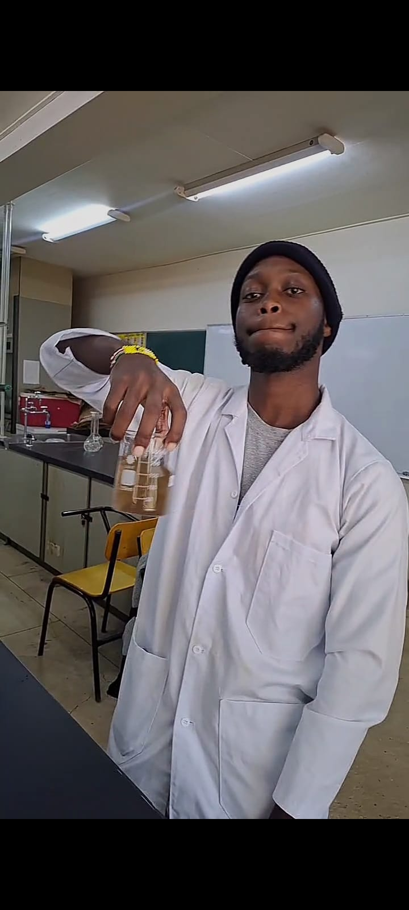

Introduction

Education is an important part of my personal and professional development. I believe in continuous learning, acquiring practical knowledge and developing skills that can help me contribute positively to society.
University Education
Jomo Kenyatta University of Agriculture and Technology (JKUAT)
Programme: Bachelor of Science in Environmental Science
Year of Study: Third Year
Institution: JKUAT
My university studies are helping me develop knowledge and practical skills related to environmental science, environmental conservation and sustainable development.
Secondary Education
Nanyuki High School
I completed my secondary education at Nanyuki High School, where I developed a foundation in academic learning, discipline and personal responsibility.
Academic Interests
- Environmental conservation
- Climate change and sustainability
- Ecology and biodiversity
- Natural resource management
- Environmental research and innovation
Future Goals
My ambition is to acquire the knowledge and practical experience necessary to contribute towards environmental protection and sustainable development. I also aim to continue improving my professional, analytical and technical skills.